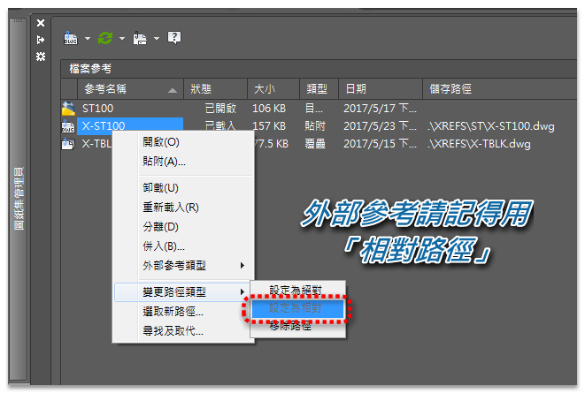

如果你有使用過「外部參考（XREF）」，那你一定要了解「參考路徑」要用哪一種！
多年來我一直推廣要使用「相對路徑」，終於 AutoCAD 2018 版本插入「外部參考」時，預設改為使用「相對路徑」。
這樣一個簡單「相對路徑」設置，可以讓其他公司或其他單位，開啟圖檔時可以找到「外部參考」檔～如此一來不會發生找不到「外部參考」的窘境。
注意事項1. 如果插入時無法指定「相對路徑」，請先儲存 DWG 檔案，再來就可以指定「相對路徑」。
2. 「外部參考」使用時機：當你有一張圖需要給所有的圖面使用（跨檔案使用同一張圖），例如圖框，這時就可以使用插入「外部參考」圖框，千萬別用插入「圖塊」圖框！
2. 「外部參考」使用時機：當你有一張圖需要給所有的圖面使用（跨檔案使用同一張圖），例如圖框，這時就可以使用插入「外部參考」圖框，千萬別用插入「圖塊」圖框！
為什麼常常找不到外部參考
若使用「完整路徑」，可以在開啟「目前圖檔」時，順利找到路徑中的「外部參考檔」圖框.dwg：
K:\Project\AT0001\S\XREFS\S2\圖框.dwg
但是若把「目前圖檔」及「外部參考」檔提供給其他公司（單位），其他公司肯定是沒有「K 槽」這個完整路徑！當其他公司（單位）開啟「目前圖檔」時，就會發生無法找到路徑中的「外部參考檔」圖框.dwg，也就無法正常顯示。
正因為常常找不到「外部參考檔」的狀況，大家索性不用！這就是大多數人不願意使用「外部參考檔」的原因之一。
外部參考路徑轉換方式
一般可使用參考管理員將路徑變更為「相對路徑」、「無路徑」或是「完整路徑」。在改成「相對路徑」時須了解路徑語法，這樣才能將原來的無路徑變更為相對路徑。
另外，也可以使用電子傳送 ETRANSMIT 來轉換路徑。若原始路徑為完整路徑，可以在「修改傳送設置」對話方塊的路徑選項，透過以下設定來轉換參考路徑：
- 使用已經整理的資料夾結構：將外部參考路徑改為「相對路徑」
- 將所有檔案置於一個資料夾中：將外部參考路徑改為「無路徑」
- 保持檔案與資料夾不變：將外部參考路徑維持為「完整路徑」
相關影片操作